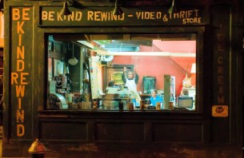

Mostanában nincs túl sok időm, de erre a posztok gyakoriságából is következtetni lehet. Szóval most „rendhagyóan” rövid leszek, trailerrel meg minden.
Már majdnem két hete, hogy lementem a helyi kis videotékába. Megnéztem az aktuális újdonságokat valami jó kis vígjátékot, meg egyáltalán valami jó filmet kerestem, mert az utóbbi időben moziba sem jutottam el. Megláttam a pulton a Be Kind Rewind-ot, egyből lecsaptam rá. Megkérdeztem, hogy bent van-e. Bent volt. Kivettem, megnéztem. Tudtam, hogy ezt a filmet Michel Gondry rendezte, de én valahogy lemaradtam róla, amikor moziban adták, ha adták egyáltalán valamikor. Egyszerűen éreztem, hogy meg kell néznem. Jól éreztem.
https://www.youtube.com/watch?v=hBDlB01fQYo
A Tokyo! és az Egy makulátlan elme örök ragyogása után reméltem, hogy Gondry megint tud újat mutatni. Jelentem, tud.
A történet New Jerseyben, Passaic városában játszódik, ami arról híres, hogy ott született a nagy jazzmuzsikus, Hájas Waller, aki végül egy kihűlt vasúti vagonban lelte halálát, de ez most annyira nem lényeges. Ugorjunk!

Adott ez a kissé lepukkant város, van benne egy régi videotéka, ahol csak VHS kazettákat lehet kölcsönözni. A tulaj (Danny Glover) Mike-ra (Mos Def) bízza az üzletet, amíg ő elmegy egy Hájas Waller emléktúrára, de sajnos szgény Mike-nak nincs szerencséje. Félig megzakkant haverja, Jerry (Jack Black) a trafóállomás elleni szabotázsakciója közben felmágneseződik és letöröl minden kazettát. Nagy szarba kerülnek, de támad egy mentőötletük, miszerint sorra újraforgatják a tékában levő összes filmet. Ami persze az egészben a legjobb, hogy egy röpke hét alatt sikerre viszik vállalkozásukat, és az emberek csak az ő filmjeiket akarják látni. Hatalmas sztori. :)

Ez a vígjáték, nem a sok fosparódia, amit Amerika évek óta nyomat. Azokban nincs semmi eredeti, csak lenyúlás és fingós, szarós poénok tömkelege, míg ez egy rendesen kidolgozott hátterű, finom részletekkel machináló igazi(!) vígjáték. Éppen ezért a mai magyar közönség nagy részének ez nem való, túl értelmes film ez ehhez.

{kind=link}
{kind=link}